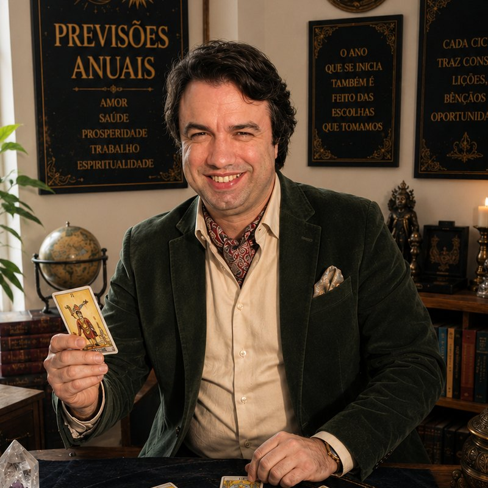

Previsões, orientação espiritual e vídeos mais recentes para iluminar o seu caminho.
escolha o seu signo
Contacte já para marcar a sua consulta, comprar o seu Ritual ou o seu Amuleto personalizado — resposta rápida e acolhedora no WhatsApp.
📞 +351 914 920 427 · WhatsApp direto